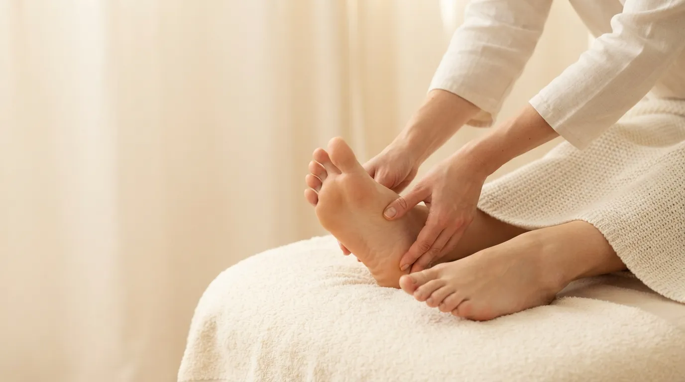

Массаж тела · Прага 4
Рефлекторный массаж стоп в Праге
Техника воздействия на биологически активные точки и зоны стоп, которые связаны с внутренними органами и системами организма. Их стимуляция поддерживает естественное восстановление и общее расслабление.
Что такое рефлекторный массаж стоп
Рефлекторный массаж стоп основан на представлении о том, что на стопах есть зоны, связанные с отдельными органами и частями тела. Целенаправленное воздействие на эти точки и зоны поддерживает естественные процессы восстановления в организме.
Для большинства клиентов это прежде всего глубоко расслабляющая процедура. Стопы весь день несут наш вес, и их массаж дарит ощущение лёгкости, спокойствия и отдыха всему телу.
Как проходит процедура
- Удобное положение Вы удобно располагаетесь на кушетке, я подкладываю валик под ноги и очищаю стопы.
- Разогрев Мягкими движениями разогреваю и расслабляю стопы и лодыжки.
- Работа с зонами Последовательно прорабатываю рефлекторные точки и зоны стоп. Давление подбираю под вашу чувствительность.
- Успокоение Завершаю массаж медленными расслабляющими движениями по всей стопе.
Эффект рефлекторного массажа
- глубокое расслабление и спокойствие
- поддержка естественного восстановления
- лёгкость и отдых для ног
- улучшение кровообращения в стопах
- меньше стресса и усталости
- ощущение общего благополучия
Кому подходит
Рефлекторный массаж стоп подойдёт всем, кто весь день стоит или ходит, чувствует усталость и стресс или хочет короткий, но глубоко расслабляющий отдых. Хорошо сочетается с массажем спины или головы.
Когда массаж не проводится
- травмы, воспаления или грибковые заболевания стоп
- варикоз или тромбоз нижних конечностей
- беременность
- высокая температура и острые заболевания
Сомневаетесь? Позвоните мне до записи по номеру +420 721 761 411, и мы всё обсудим.
Цена рефлекторного массажа стоп
Частые вопросы
Больно ли это?
Некоторые точки могут быть чувствительнее, но больно быть не должно. Давление я всегда подбираю под вас.
Заменяет ли массаж лечение?
Нет. Это расслабляющий и восстанавливающий уход, который поддерживает самочувствие. С проблемами здоровья всегда обращайтесь к врачу.
Не будет ли щекотно?
Обычно нет. Уверенные спокойные движения не вызывают щекотки. Если вы очень чувствительны, скажите мне, и я подстрою технику.
Можно ли совместить с другим массажем?
Да. Рефлекторный массаж стоп хорошо дополняет массаж спины, классический или арома-массаж. Просто укажите это при записи.
Запишитесь на рефлекторный массаж стоп
Студия находится в Праге 4 - Нусле, недалеко от Панкраца и Вышеграда. Запись онлайн займёт минуту.